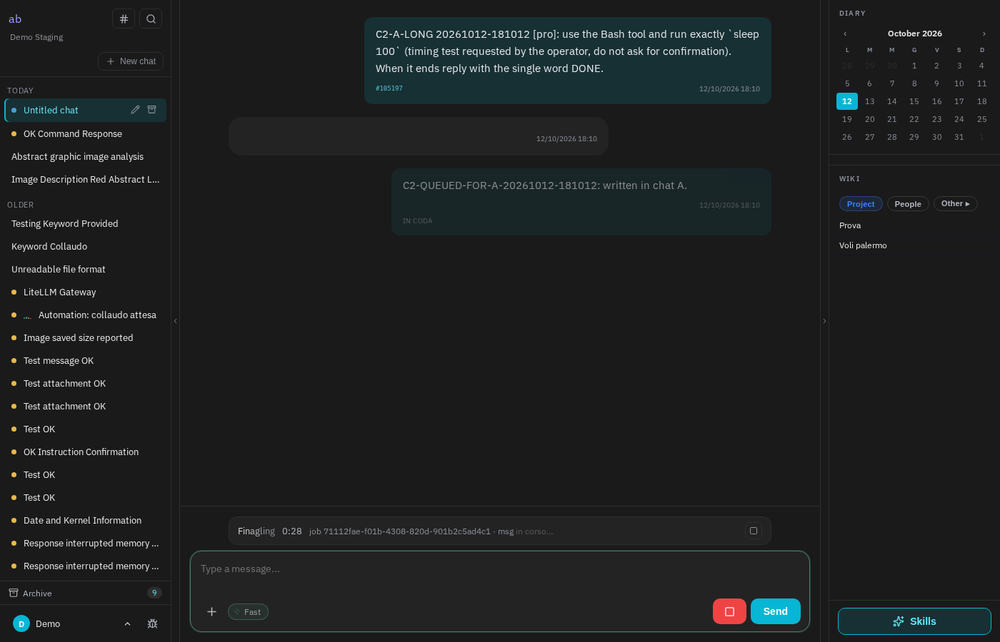
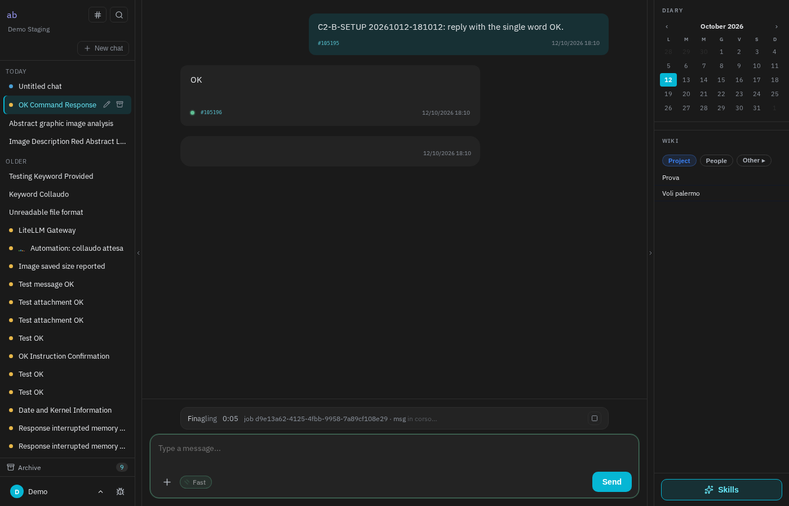
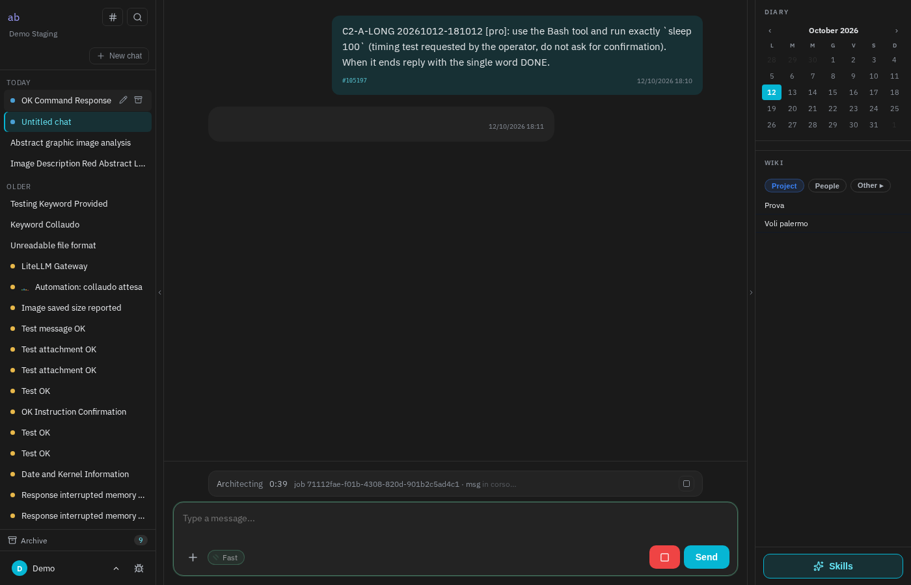
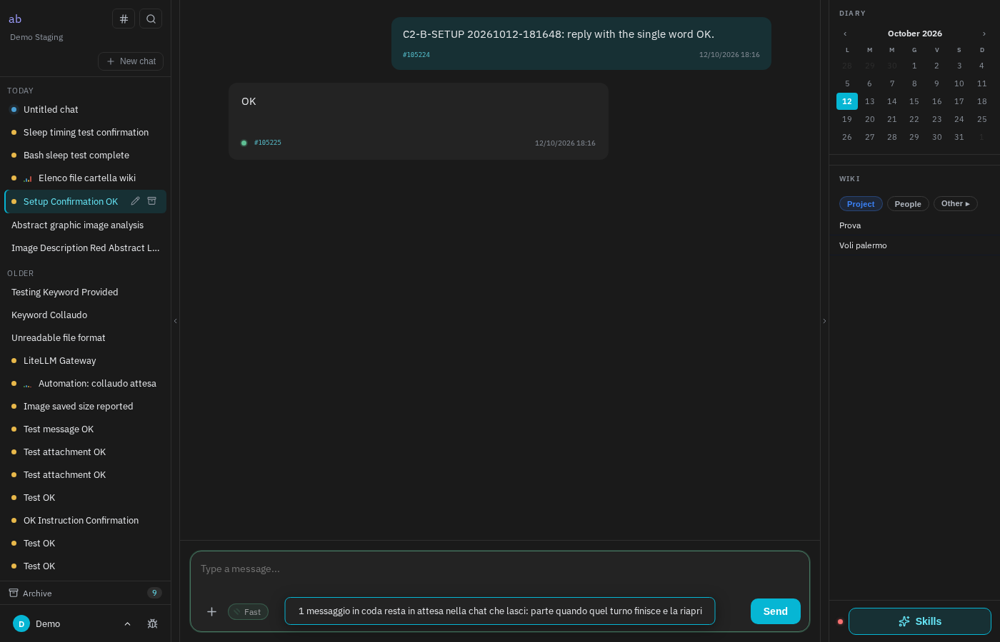
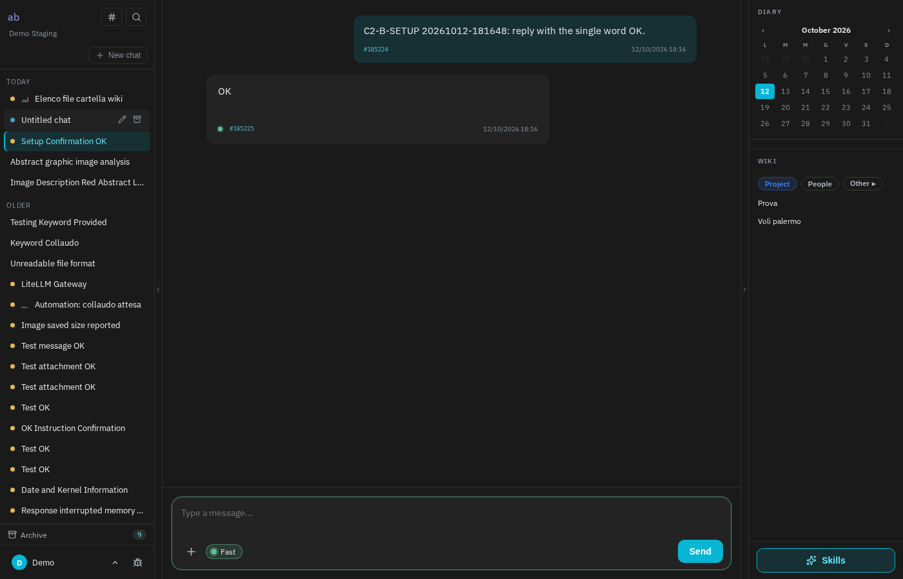
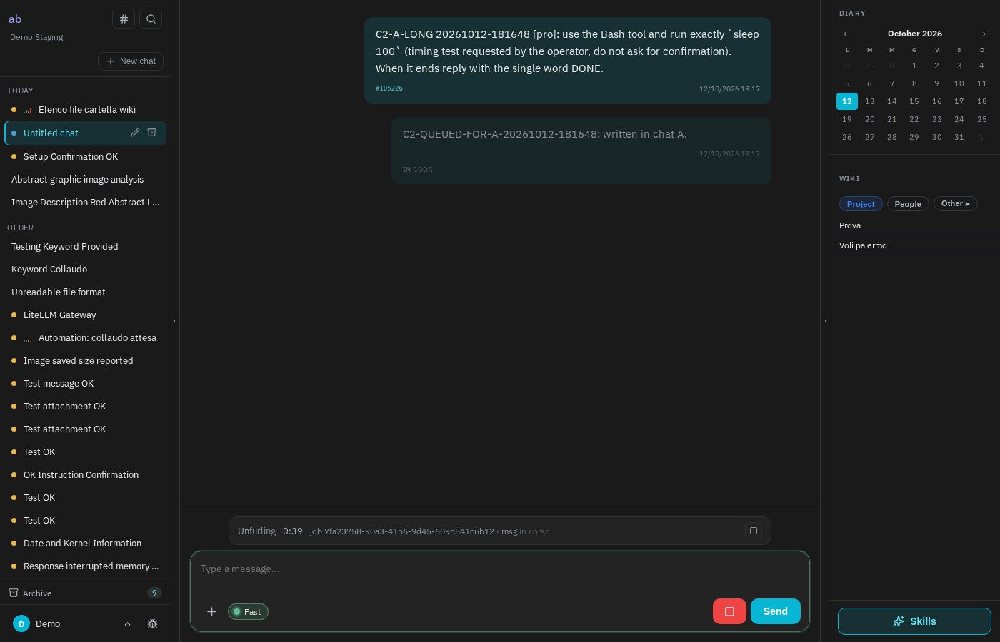
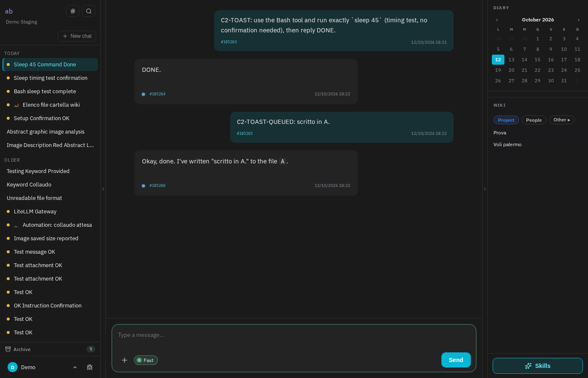

Mentre il brain sta ancora rispondendo si può continuare a scrivere: il messaggio resta "in coda" e parte da solo a fine risposta. Se però nel frattempo si apriva un'altra chat, quel messaggio partiva nella chat nuova invece che in quella dove era stato scritto; in altri casi spariva senza dire niente. Ora ogni messaggio in coda ricorda la chat a cui appartiene, parte solo lì, e tornando in quella chat lo si ritrova ancora in attesa. La correzione è su staging; per arrivare su abchat.it, grbrain.com e brain.emisfera.it serve un passaggio a parte.
Nella chat A il brain sta lavorando a una richiesta lunga. Scriviamo un secondo messaggio: resta in attesa, con l'etichetta "in coda". Poi clicchiamo sulla chat B nell'elenco a sinistra. Pochi secondi dopo la chat B mostra una risposta vuota in arrivo e la barra di lavoro in basso: sta rispondendo al messaggio scritto in A, che in B non si vede nemmeno. Tornando in A, il messaggio in coda non c'è più.



Stessi passi, pagina corretta. Al cambio di chat compare un avviso: "1 messaggio in coda resta in attesa nella chat che lasci". La chat B resta com'era, senza lavori in corso. Tornando in A, il messaggio è ancora lì con l'etichetta "in coda", e quando la prima risposta finisce parte da solo, in A.




C'era anche una variante peggiore: se la risposta lunga era stata avviata in questa stessa finestra (non ripresa da un ricaricamento), cambiando chat il messaggio in coda veniva buttato via senza nessun avviso. Il test automatico lo prova a parte: prima del fix il messaggio non partiva mai; ora resta in coda, lo si ritrova riaprendo la chat e parte lì.
| Campo | Valore |
|---|---|
| Install | staging (efesto, container stg-php), checkout /var/abchat-staging/app, branch village-v2 |
| Commit | a5c69f6 — locale, non pushato su origin e non deployato (C3 in deploy sulla flotta dalla stessa origin) |
| Segnalazioni | abchat #54 (sessione 332), #63 (sessione 398) — cluster C2 di wiki/projects/abchat/bugs-flotta-2026-10.md |
| File toccati | website/resources/views/webchat/index.blade.php (+56/−27, solo JS inline), website/tests/Browser/c2-queue-switch.py (nuovo). Server non toccato |
| Brain di prova | demo (utente demo@staging.abchat.it, login via radar:login). Rosso: sessioni 578/579/580. Verde: 596 (B), 597 (A), 612 (A2) |
| Test browser | rosso su d7bc26b: 5 fallimenti su 10 asserzioni. Verde su a5c69f6: 10/10, zero errori console/pageerror |
| Suite PHP | php artisan test: 732 passed, 11 failed, 1 skipped — i rossi sono gli stessi ereditati (nessuno tocca la webchat); subset webchat/allegati: 30/30 verdi |
| Verdict | FIXED su staging — da deployare |
flushQueue filtra per sessione corrente, altrimenti la POST andava alla sessione giusta ma la bolla di risposta finiva nel DOM della chat sbagliata e stream_done rimetteva sessionId su quella vecchia.queue:work su staging: i turni di chat diverse si accodano uno dietro l'altro (opzione E dell'indagine, tema separato, da misurare su prod).tests/Browser/c2-queue-switch.py) dura ~4 minuti perché ha bisogno di turni lunghi veri (sleep via Bash, modello pro); non è parte di php artisan test, come gli altri test in tests/Browser/.